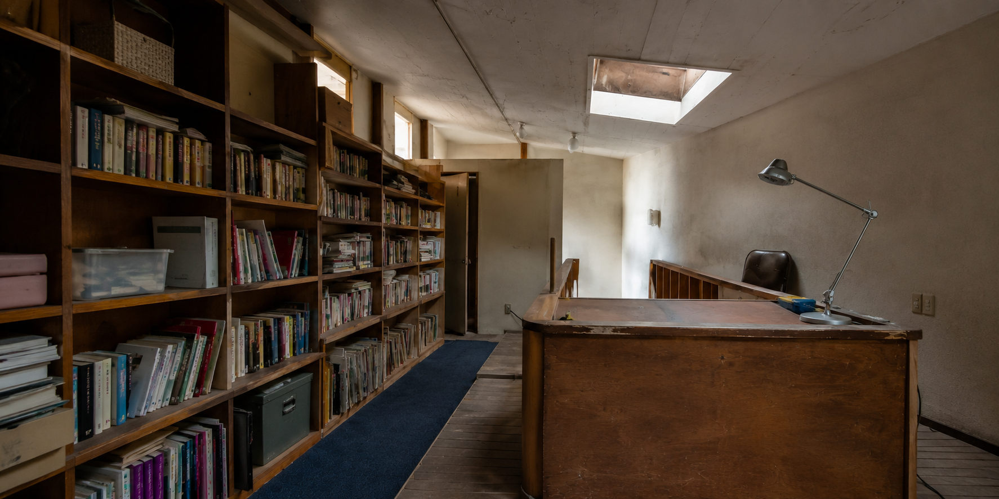

02 / PROJECT
本と仕事道具が自然に収まり、
木の表情と光が落ち着きをつくる店舗内装。
- TYPE
- 店舗・スタジオ
- SCOPE
- 内装施工・木部施工・照明調整
- MATERIAL
- 木材・金属・ガラス

PROJECT STORY
依頼内容と提案依頼内容
増えていく本や資料を見渡しやすく収めながら、接客と個人作業のどちらにも集中できる場所をつくりたい、という相談から始まりました。
提案・施工
壁面収納と作業台の高さを揃え、狭い通路でも移動しやすい寸法に調整しました。木目の方向と光の入り方を合わせ、空間が連続して見えるように仕上げています。
収納量を確保しながらも圧迫感が出ないよう、視線が抜ける場所と余白を残しました。
BEFORE / AFTER
施工前と施工後
PROJECT SUMMARY
施工を終えてこの計画では、限られた床面積の中に十分な収納と作業場所を確保しながら、人が行き交うための余白を残すことを重視しました。壁面いっぱいに設けた棚は、収納物の大きさや使用頻度を確認し、一段ごとの高さと奥行きを細かく調整しています。木部は面ごとに木目の方向がばらつかないよう整理し、天井から作業台まで視線が自然につながる構成としました。作業面には手元を明るく照らす光を確保しつつ、空間全体では光源が強く主張しない位置を検討。昼と夜で異なる木の表情を楽しめるようにしています。また、棚に本や道具が入った状態でも雑然と見えないよう、閉じる収納と見せる収納を使い分けました。素材を増やしすぎず、木・金属・ガラスの質感を落ち着いた色調でまとめることで、仕事に集中する時間にも来客を迎える時間にもなじむ、静かで使いやすい店舗空間を目指しました。